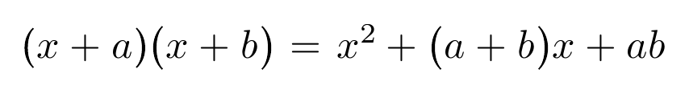

分数
このページでは、SATySFi で数式として分数を出力する方法について書きます。math.satyh を使っています。
通常の分数
単なる分数 (fraction) を表すには \frac コマンドを使います。
コード例
+math (${
x = \frac{a}{b}
});
コード例の組版結果 (SATySFi version 0.0.3)
インラインの分数
行内にも分数を書くことができます。
コード例
+p {
リーマンゼータ関数の非自明な零点の実部はすべて${\frac{1}{2}}であるか？
}
コード例の組版結果 (SATySFi version 0.0.3)

メモ: LaTeX のように、分数がインラインにあるときは自動的に表示形式を変える機能があると良いかもしれません。
連分数
\frac コマンドを入れ子にすることで連分数を記述できます。
コード例
+math (${
x = a + \frac{1}{b + \frac{1}{c}}
});
コード例の組版結果 (SATySFi version 0.0.3)
